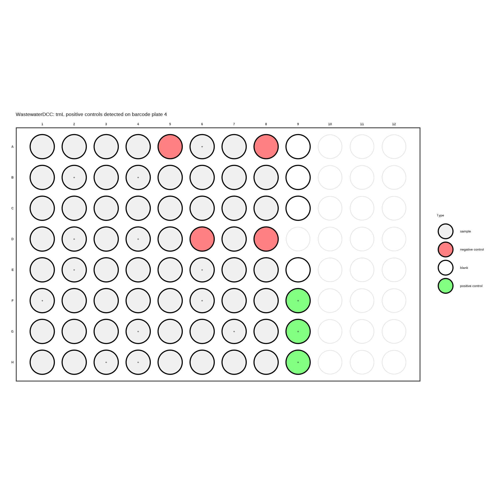
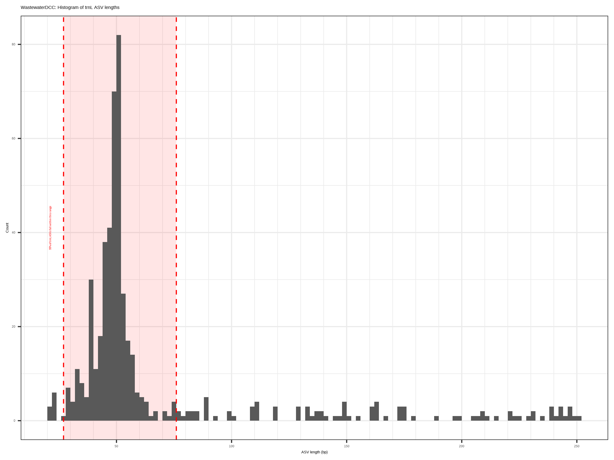
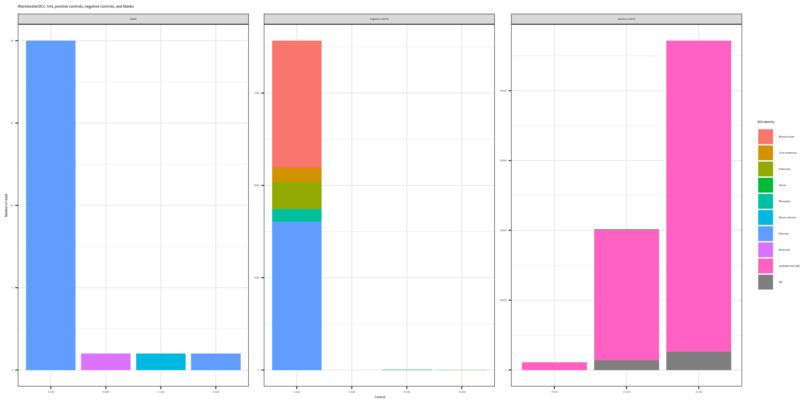
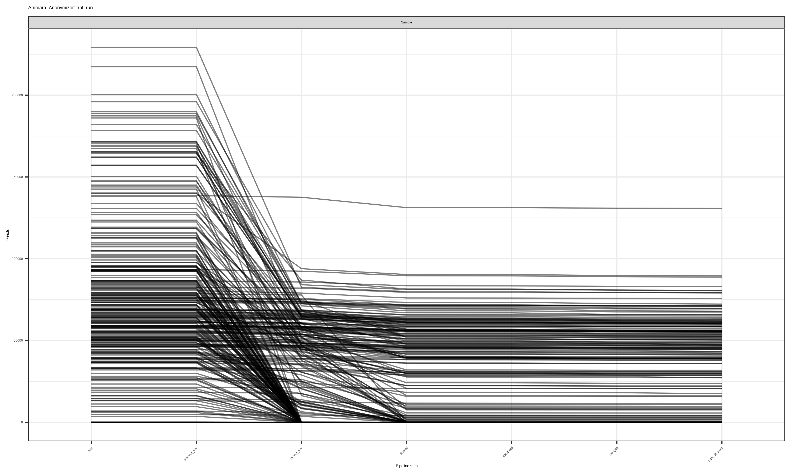

Standardized Pipelines · Taxonomic Translation · Data Privacy
Ashish S. + Claude
David Lab · Duke University
February 13, 2026
Since last time
My last presentation was late October/early November, focused on active projects.
What I presented on
Wastewater 2.0 volume analysis
Joti analysis
Auri’s PacBio run
What I’ve been doing since
Missed some time due to interviews and travel
Focus shifted to the megaphyloseq, analyzing Auri’s data, a documentation website, and related tools and updates for the pipeline
What I’m hoping to talk about today
Since Auri presented last week and we had the recent bullet points meeting, I didn’t think I had much to say—so I decided to talk about the tools I’ve been building.
1
Familiarize new lab members with what I do and how the dry lab side works
2
Get everyone up to speed on what tools exist and what their issues are—lots of testing needed
3
Get feedback from the group
4
Test out making presentations with Claude Code—mirrors some of my experience building the documentation website
What I’ve been building
A suite of tools to automate, standardize, and improve our metabarcoding data workflow.
Pipelines
Pipeline-to-Phyloseq
Core data processing for trnL, 12S, and multiplex runs — rebuilt from the ground up
Includes Isilon-to-Phyloseq, a hands-off specialization for the megaphyloseq project
Separate from dietary markers; complements trnL/12S with microbiome context
Utilities
Common Name Assignment
Translates multi-species ASV matches into concise, human-readable dietary names
Operates on trnL phyloseq objects
Human Read Anonymizer
Detects and replaces human DNA in 12S data for SRA deposition and IRB compliance
Pre-processing step, runs before the pipeline
The Pipeline Upgrade
Rewriting the lab’s core data processing workflow for the multiplex era
The journey of a sequencing run
The old Pipeline-to-Phyloseq
The lab’s existing code has served us well for years, but was built for a different era—single-marker runs (trnL or 12S processed separately).
How it worked
One marker at a time — separate runs for trnL and 12S, processed independently
Manual scp commands to download from DCC
Manual unzipping of QIIME2 artifacts to extract read counts
Taxonomy via taxonomizr + local NCBI SQL database (~70 GB on Isilon)
Missing accessions required manual lookup and hardcoded fixes
The problem: the lab is moving to multiplex sequencing—pooling trnL and 12S together in a single run. The old code wasn’t designed for this and couldn’t handle multiplexed data.
Other limitations: required Isilon-mounted 70 GB SQL database, manual setwd() path management, and significant codebase familiarity.
The new Pipeline-to-Phyloseq
A complete rewrite built for the multiplex era—trnL and 12S from a single pooled run, processed together from the start.
Built for multiplex
Handles multiplexed runs natively — trnL and 12S results are split and processed from one sequencing run
rsync downloads with staging directory — replaces manual scp
Automated read count extraction — no more unzipping QZV files
Custom taxonomy functions (assign_trnL, assign_12S) — exact substring matching via Biostrings, no 70 GB SQL database
Template format — change a few variables and run
What stayed
QIIME2 artifact reading via qiime2R
ASV collapsing with collapseNoMismatch()
Positive/negative control QC
Phyloseq as the output format
Goal: a standardized workflow where any lab member can go from multiplex pipeline output → QC’d phyloseq with minimal setup and no manual path construction.
Designed for standardization and ease of use
For the analyst
Template format — set a few variables at the top (netid, paths, marker) and run the notebook
Built-in instructions — prerequisites checklist, step-by-step documentation, and troubleshooting notes
Automated rsync — downloads from DCC with a staging directory that handles Box file-conflict renaming
Both markers in one run — splits trnL and 12S results from a single multiplexed output
Guardrails
Validation gates — checks for required QZA files before proceeding; skips incomplete runs
ASV length QC — histogram of sequence lengths to catch filtering issues
Control QC — validates positive/negative controls and generates plate-layout visualizations
QC output: what P2P generates
Every run produces automated quality-control visualizations:

Plate layout Sample, control, and blank positions with positive control detection flags

ASV length distribution Histogram with expected range (red dashed lines) to catch filtering anomalies

Control composition ASV identities in blanks, negative controls, and positive controls
Known issue: plot labels and text are too small—fixing this is on the to-do list.
Isilon-to-Phyloseq: the megaphyloseq tool
A specialized version of the pipeline for one project: the megaphyloseq—a cumulative compilation of all lab sequencing data. Change one line (the run folder name), hit go.
27 runs from 15 cohorts added since November by 2 users, with automated changelog tracking.
What it automates beyond P2P
Isilon → DCC transfer with rsync retry logic (up to 3×) and SSH connectivity checks
Remote pipeline execution — writes and submits SLURM jobs via SSH; sbatch --wait ensures sequential steps
Results download from DCC back to Box
Megaphyloseq merge — checks for name collisions, merges new run into the cumulative dataset
Google Sheets tracking — catalogs unassigned ASVs, logs additions/deletions
Duplicate-run protection — queries the catalog before processing
Data flow
Taxonomic Translation
Turning ASV sequences and scientific names into human-readable dietary identifications
Where this fits
Common name assignment is a post-processing step on the phyloseq output.
The trnL chloroplast marker is relatively low-resolution, and real sequences are often shorter than the full-length reference—so a single ASV can match dozens of reference species across multiple genera.
The challenge: we can’t just list 83 Latin binomials in a dietary report. We need a concise, meaningful common name that captures what this ASV likely represents in someone’s diet.
Resolved to:
“strawberries, raspberries, and blackberries”
The common names database
A curated reference CSV mapping trnL ASV sequences to conventional dietary names.
Column
Example
Purpose
asv
CAAATCCT...
Full trnL barcode sequence
taxon
Fragaria × ananassa; Rosa rugosa; ...
All matching species (semicolon-separated)
conventional_name
strawberries, raspberries, and blackberries
Expert-curated common name
genus
Fragaria; Rosa; Rubus
Genera represented
genus_conventional_name
strawberry; rose; blackberry
Per-genus common names
The reference contains full-length ASVs, but real sequences are often shorter—matching to multiple reference entries. What happens when one ASV matches several names?
assign_common_names()
An R function that matches ASVs to the reference database and resolves naming conflicts through a multi-level hierarchy.
Resolution in action
Concrete examples of how each resolution level works:
SupersetCoffea canephora; C. congensis; C. liberica (coffee) + Coffea canephora (robusta coffee) + Coffea liberica (Liberian coffee)
→Coffee — robusta coffee and Liberian coffee are subsets of the first ASV’s species, so it absorbs them
ConcatenationNauclea orientalis (canary wood) + Vangueria madagascariensis (Spanish tamarind)
→Canary wood and Spanish tamarind — disjoint species, so names are concatenated
Genus overridePandanus amaryllifolius; P. dubius; P. spiralis; P. tectorius (pandan) + Pandanus conoideus (pandan) + Pandanus dubius (bakong)
→Pandan — all species share the genus Pandanus, so genus-level name wins
Original quality scores are preserved—only SNP positions are set to Q35. For R1/R2 paired reads, only the relevant primer end is kept.
Preventing downstream artifacts
If all replaced reads had identical sequences, DADA2 would collapse them into a single ASV—creating a misleading “super-read” in the denoised output.
The problem
Read 1: REPLACE_CORE_SEQ
Read 2: REPLACE_CORE_SEQ
Read 3: REPLACE_CORE_SEQ
→ DADA2 collapses to 1 high-abundance ASV
The solution: fixed SNP positions
Read 1: REPLACE...CARE...SGQ
Read 2: REPLACE...CTRE...SAQ
Read 3: REPLACE...CGRE...SCQ
positions at 33% & 67% of sequence
→ 4² = 16 distinct variants, cycled by read index
Deterministic: the same read index always produces the same variant. The recognizable core prefix still allows identification downstream.
Built-in verification
The tool doesn’t just write output—it reads it back and checks its own work.
1
Process — scan each read, identify human sequences, replace cores while preserving primers
2
Write — output anonymized FASTQ.gz with matching read count
3
Verify — re-read the output file and confirm that:
Input and output read counts match exactly
Every replaced read contains the expected synthetic prefix
Original primers are intact on replaced reads
Statistics reported: total reads, reads flagged as human, replacement rate, verification pass/fail — all logged to console for every file processed.
Scaling up: HPC batch processing
A companion shell script submits anonymization as a SLURM job array—one task per FASTQ file, running in parallel across the cluster.
# submit_anonymization.sh (simplified)
# Discover all FASTQ files
find $INPUT_DIR -name "*.fastq.gz" \
> file_list.txt
# Prepare SLURM script from template
# (replaces placeholders with actual values)
# Submit job array
sbatch --array=1-${N_FILES} \
--export=ALL \
slurm_anonymize_job.sh
# Each array task processes one file
# via human_read_anonymizer.R
Configuration
Threshold: 70% k-mer overlap
K-mer size: k=8
Resources: 16 GB RAM, 8 hrs per file
Container: Singularity (with fallback to system R)
Provenance: each job saves a metadata file with the job ID, parameters, file list, and timestamp for full traceability.
The current challenge
Read tracking from Ammara’s anonymized run—trnL works fine, but 12S reads crash at the denoising step:
trnLNormal—gradual read loss through pipeline steps

12SProblem—most samples drop to near-zero after denoising
Root cause: DADA2 is filtering out or collapsing the replacement sequences—the reworked approach (preserved quality scores, fixed SNPs) aims to fix this. Validating end-to-end is the next step.
PacBio 16S Pipeline
Long-read microbiome sequencing with DADA2
Where this fits
PacBio 16S is a parallel path—a different sequencer and pipeline, but it produces the same output format.
Why full-length 16S?
PacBio HiFi reads capture the entire 16S rRNA gene (~1500 bp), enabling species-level resolution that complements our dietary metabarcoding.
Short-read vs. long-read
Illumina V4: ~250 bp → genus-level classification
PacBio HiFi: ~1500 bp → species-level resolution
Full gene coverage eliminates primer-region bias
Lab context
trnL / 12S capture what subjects eat
16S captures the gut microbiome response
Together: diet–microbiome relationships
PacBio 16S: under the hood
Key design choices
PacBioErrfun — error model calibrated for HiFi reads (not Illumina defaults)
Orientation detection — primers found in both directions automatically
minBoot = 50 — bootstrap confidence for taxonomy calls
Read tracking CSV — QC counts at every pipeline step
HPC infrastructure
32 CPUs, 256 GB RAM, 5-day SLURM allocation
Singularity container for reproducibility
Scratch-based I/O for performance
Thread control to prevent over-subscription
Intermediate RDS saves for recovery
Output: a phyloseq object (ps_PacBio_16S.rds) with full taxonomy, chimera-free ASV table, and sample metadata—ready for downstream analysis.
Looking Ahead
Future directions
What’s next
Pipeline-to-Phyloseq
Consult Ben Callahan on the new assignment functions
Small bugs: skip QC gracefully when positive controls aren’t detected; larger plot labels
Isilon-to-Phyloseq
Fix DCC permission issues (chmod) and Isilon upload bugs
Integrate common names & assignment updates into the megaphyloseq workflow
Human Read Anonymizer
Validate reworked approach (preserved quality scores, fixed SNPs) on Ammara’s data end-to-end through DADA2
Ready for wider testing
Megaphyloseq — need testers while Dorothy is out; please share gmails if interested
Common names — functional; looking for others to test
PacBio 16S — validated on Auri’s samples; Caroline testing next
Summary
1
Pipeline-to-Phyloseq — rebuilt for multiplex sequencing (trnL + 12S in one run), plus a specialized Isilon-to-Phyloseq tool for the megaphyloseq
2
Common Name Assignment — translates complex multi-species ASV matches into concise, human-readable dietary names with smart conflict resolution
3
Human Read Anonymizer — privacy-safe replacement of human DNA in 12S data, preserving file structure and downstream compatibility
4
PacBio 16S Pipeline — full DADA2 pipeline for long-read microbiome sequencing with GreenGenes2 taxonomy
Common thread: standardization, reproducibility, and accessibility—making our data processing consistent, robust, and easier for everyone in the lab to use.